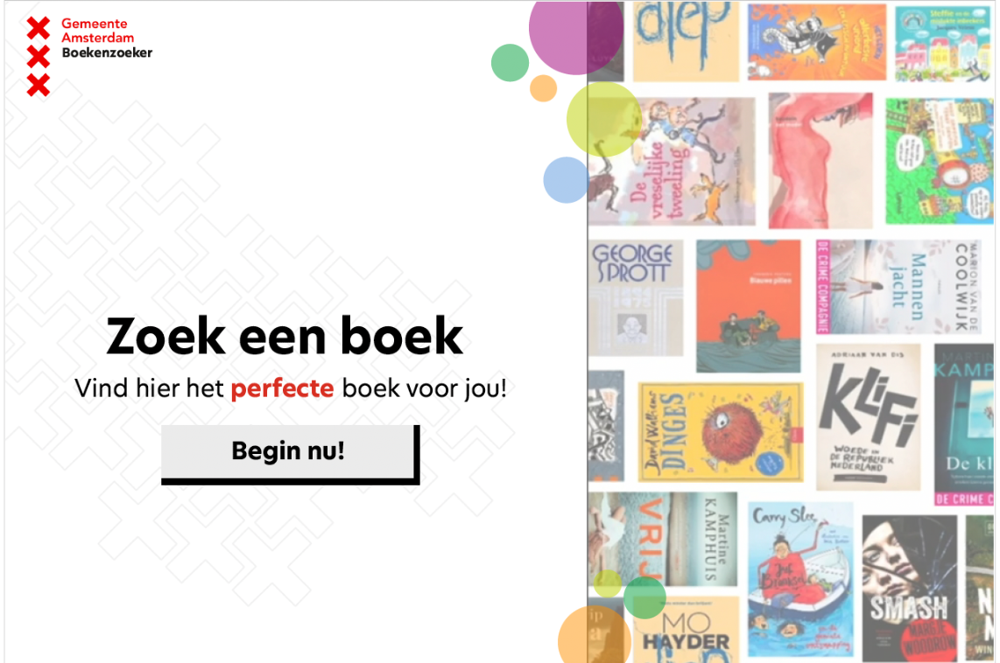
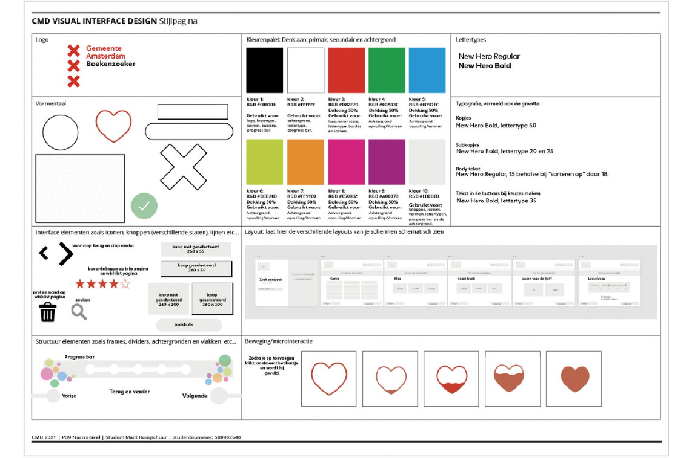

Voor het vak Visual Interface Design is de opdracht om een boekenzoeker te maken voor kinderen die in de bibliotheken van Amsterdam opzoek zijn naar boeken.
| Klantnaam | Hogeschool van Amsterdam, Gemeente Amsterdam |
|---|---|
| Duur | 6 weken |
| Datum | 06-02-2023 t/m 14-04-2023 |
Tijdens dit vak heb ik gewerkt aan een interface ontwerp voor de onderbouw van de middelbare school. Het doel was om een gebruiksvriendelijke interface te creëren waarmee leerlingen in de schoolbibliotheek op een iPad eenvoudig een overzicht konden krijgen van boeken die voor hen aantrekkelijk waren om te lezen, gebaseerd op een aantal voorkeuren die ze aangaven.
Om het ontwerpproces goed te stroomlijnen, volgde ik een vast stappenplan en werkte ik gelijktijdig aan zowel de schermontwerpen als aan de te gebruiken 'stijl', waarbij ik zowel de huisstijl van de opdrachtgever respecteerde als een eigen substijl ontwikkelde die de doelgroep meer aansprak. Bovendien richtte ik me bij de schermontwerpen uitsluitend op het functionele aspect van de vormgeving.
Het proces van het maken van het interface ontwerp ging heel soepel. Iedere werkgroep kregen we nieuwe theorie, die ik vervolgens toepaste in mijn eigen interface. Ook had ik iedere week een feedback moment, waar ik de docent mijn werk op dat moment kon laten zien en dan tips en tops ontving. Als ik ergens tegenaan liep kon ik altijd terecht bij de docent. Hierdoor liep ik tegen vrij weinig obstakels aan.
ik ben erg trots op het uiteindelijke resultaat, omdat deze opdracht heel vrij was. Ik kon zelf bepalen hoe ik alles indeelde en vormgaf. Dit vond ik erg leerzaam, maar vooral heel erg leuk! Ik heb velen competenties toegepast, namelijk zelfstandig werken, kritisch denken en time management.
Wil je meer van mij zien? Klik hieronder om meer projecten te bekijken!
BEKIJK MEER PROJECTEN